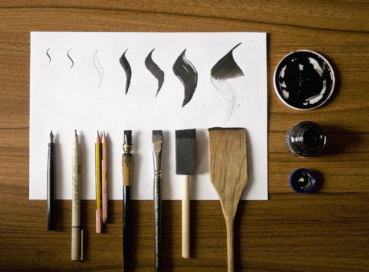

Calligraphy is the art of creating beautiful, stylized writing by hand. It involves using a variety of tools, such as pens, brushes, and nibs, to create unique and intricate designs. Calligraphy can be used to create everything from wedding invitations to logos and signage. It is a highly skilled art form that requires patience, practice, and attention to detail.
There are many different types of calligraphy, each with its own unique style and history. Here are some of the most common types of calligraphy: Western Calligraphy: Western calligraphy is the most common type of calligraphy in the Western world. It involves using a pen or brush to create a variety of styles, such as Roman, Gothic, and Italic. Chinese Calligraphy: Chinese calligraphy is a highly respected and traditional art form in China. It involves using a brush and ink to create characters that are highly stylized and full of meaning. Japanese Calligraphy: Japanese calligraphy is similar to Chinese calligraphy, but it has its own unique style and history. It involves using a brush and ink to create characters that are highly stylized and full of meaning. Islamic Calligraphy: Islamic calligraphy is a highly respected art form in the Islamic world. It involves using a pen or brush to create intricate designs and calligraphic script that is used in the Quran, Islamic architecture, and other works of art. Modern Calligraphy: Modern calligraphy is a newer form of calligraphy that has become popular in recent years. It involves using a variety of tools, such as brush pens and markers, to create unique and stylized designs.

If you're interested in learning calligraphy, there are a few things you can do to get started: Choose Your Tools: The first step in learning calligraphy is to choose your tools. Depending on the type of calligraphy you want to learn, you may need a pen, brush, or nib. Learn the Basics: Once you have your tools, it's time to start learning the basics of calligraphy. This includes learning how to hold your tool, how to create basic strokes, and how to form letters. Practice, Practice, Practice: Like any skill, calligraphy takes practice to master. Set aside time each day to practice your strokes and lettering. Take a Class: If you're serious about learning calligraphy, consider taking a class. Many art schools, community centers, and calligraphy societies offer classes for all levels of skill. Experiment and Explore: Finally, don't be afraid to experiment and explore with different styles and techniques. Calligraphy is an art form that allows for a lot of creativity and personal expression.
How i Became a Calligrapher
My Journey and
Written by Muntazir Mehdi